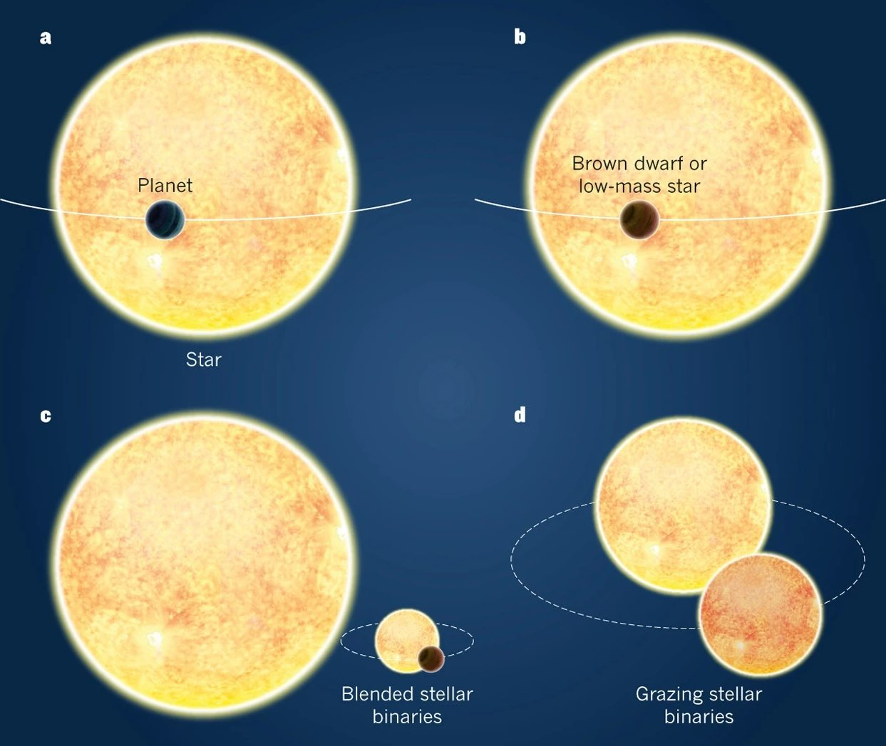
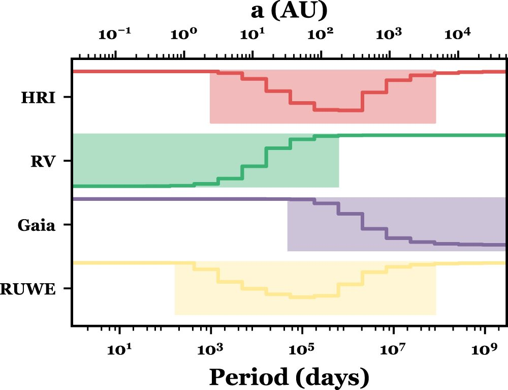
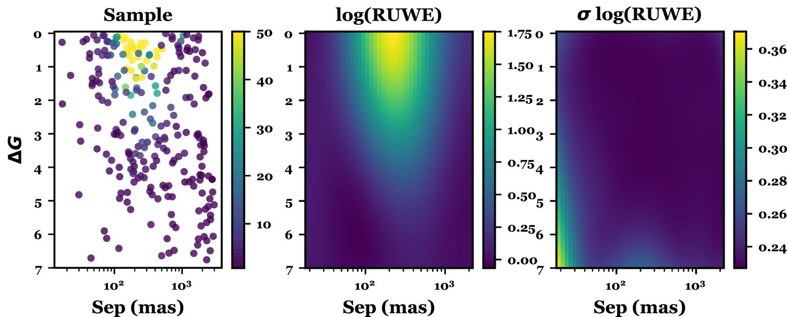
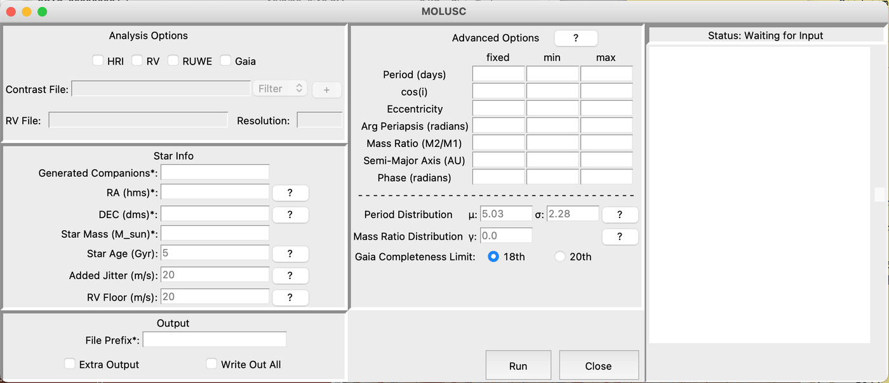

So suppose you find a signal that resembles a transiting planet, and you want to make sure there's no other star there. The most common concern here is if there is some other star in the aperture. If another star is there, whether it be bound to the target or a random background/foreground star, it is likely that your transit parameters are wrong. If the signal is coming from the other star, they are likely very wrong. The most common types of false positives when searching for transiting planets involve another star in the field.
Figure from Cameron (2012). highlighting different kinds of systems that make transit-like signals. This list is incomplete, but gives a general impression of the potential role of having another star in the field of view, and how it can trick you into thinking you found a transiting planet. In cases b, c, and d, you don't necessarily know there is another star there. That is, the other star is 'blended' or 'unresolved' in the data you have.
These scenarios need to be ruled out as part of confirming or validating that the signal is planetary in nature. So how do we do that? Ideally, we would try to prove there's no star there. That's challenging, because extremely low-mass stars and those on special orbits can be hard to detect. The good news is that we don't have to rule out every possible companion, we need only rule out the ones that could reproduce the observed transit signal. Also, if we can rule out the overwhelming majority of problematic companions, we can at least say that it is unlikely that a planet is a false positive, even if we aren't 100% sure.

In most cases astronomers combine a mix of data to cover different kinds of unseen stars. High-resolution imaging (HRI) can capture companions on wide orbits, while radial velocities (RV) can detect stars on tight orbits. Gaia's deep imaging can capture targets on wider orbits. A summary of how this works for an example star can be seen to the right. The shaded regions are where a given method provides the most constraints on possible companions.

"RUWE" is the one that requires some explanation. Gaia can detect certain kinds of companions that generate an astrometric wobble; this shows up as excess noise in their astrometric fits, which they characterize using the RUWE parameter. It has been known for a while that a high RUWE correlates with binarity, but we wanted to quantify that. We used a set of nearby stars with deep HRI as a test and found the set of parameter space where RUWE is effective, which we show below.

As expected, it works best on brighter companions at moderate separations. That's got a lot of overlap with HRI (see above), but it's "free" (in that Gaia already took the data).
So we can bring this together in a single framework using the MOLUSC code. MOLUSC lets you take a range of inputs, multi-epoch imaging, velocities, Gaia, and even constraints from the color-magnitude diagram.

Run it, and out pops the fraction of binaries that survive and the potential parameters of those binaries. Perfect for your next planetary system.